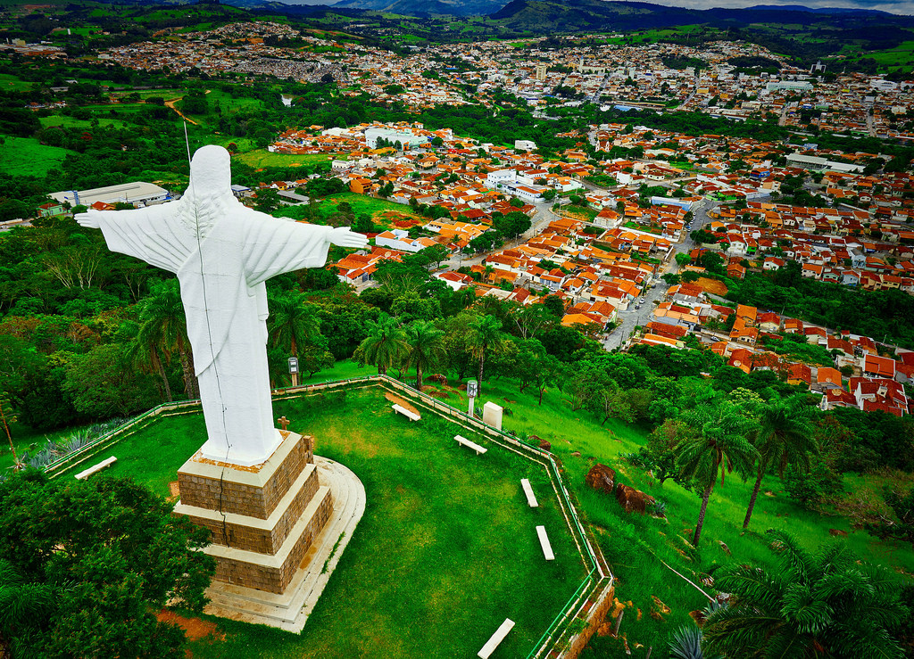

São José do Rio Pardo foi uma região das mais produtivas do café, o "ouro verde", e contava com dezenas de fazendas monocultoras que durante o século XIX usaram a mão de obra do escravo africano, que foi sistematicamente substituída pelo imigrante italiano, que após a "Quebra" da Bolsa de Nova Iorque adquiriram seus quinhões de terra que hoje compõe a geografia agropastoril do município. No início do Século XX, São José do Rio Pardo acolheu grande quantidade de imigrantes, principalmente italianos. Também foi no município que Euclides da Cunha escreveu sua obra prima, Os Sertões, durante o período em que viveu e trabalhou no município, entre 1898 e 1901.
O clima de São José do Rio Pardo é tropical de altitude (Cwa). A temperatura máxima já registrada no município, foi de 36,4 °C em 26 de setembro de 2003, e a mínima foi de 0,5 °C, em julho de 1994.[9] O clima do município é amenizado por sua localização geográfica no vale do Rio Pardo, entre as montanhas da Serra do Cervo (braço da Serra da Mantiqueira). A média das temperaturas máximas varia entre 25 °C e 30 °C durante o ano, e média das mínimas cai para próximo de 10 °C no inverno. As chuvas se concentram na primavera e verão (entre outubro e março), sendo janeiro, em média, o mês mais chuvoso. O inverno é seco e apresenta grande amplitude térmica. Massas de ar polar oriundas da Antártida limpam o céu e derrubam a temperatura em alguns dias, podendo criar condições para a ocorrência de geadas. Julho é o mês menos chuvoso e mais frio.